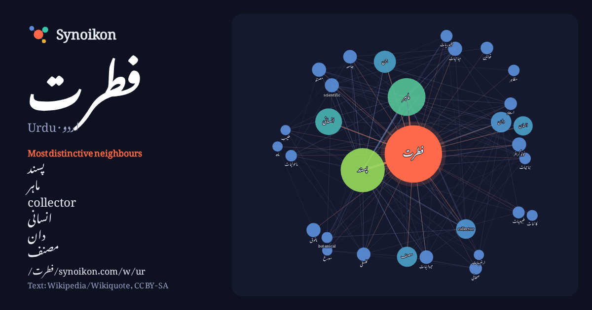

اردو · Urdu · popular word
فطرت
“nature” · The words found around it in 675 instances from Urdu Wikipedia, Wikiquote.

Most distinctive neighbours
- پسند 68×
- ماہر 62×
- collector 29×
- انسانی 28×
- دان 20×
- مصنف 19×
- scientific 16×
- فوٹوگرافر 16×
- مافوق 16×
- حیاتیات 15×
- حیوانیات 15×
- مصنفہ 15×
- انسان 14×
- فلسفی 13×
- طیوریات 12×
- نباتیات 11×
- ماحولیات 10×
- مظاہر 10×
- صحافی 10×
- جامعہ 10×
× = how many times more often than in general Urdu Wikipedia text.
Most frequent neighbours
- پسند 147
- میں 140
- ماہر 108
- سے 94
- کا 85
- کو 66
- اس 60
- انسانی 54
- جو 42
- جن 37
- نے 36
- دان 32
- مصنف 31
- collector 29
- تھا 29
- یا 29
- انسان 28
- ان 26
- لیے 24
- وہ 24
In context
- فطرت یا قدرت ایک جبلی کردار یا دستور ہے، خاص طور پر کرۂ ارض یا پورے کائنات کا۔ عموماً فطرت جسمانی دنیا کے سائنسی قوانین، عناصر اور مظاہرات کو کہا جاتا Wikipedia snippets · فطرت
- فطرت پسند (انگریزی: Naturalism) ایک ادبی تحریک ہے جو انیسویں صدی کے نصف آخر میں نمودار ہوئی۔ فرانسیسی ادیب ایمیل زولا نے ناول نگاری کے لیے اس ادبی مسلک Wikipedia snippets · فطرت پسندی
- عقیدہ وحدت فطرت، مونوفیزیت یا وحدت الفطری عقیدہ کا بانی قسطنطنیہ کے راہبوں کا سردار یوٹیکس تھا۔ اس عقیدہ میں یہ مانا جاتا تھا کہ یسوع میں انسانی اور خدائی Wikipedia snippets · عقیدہ وحدت فطرت
- عبد الرؤف فطرت ( ازبک: Abdurauf Fitrat / Абдурауф Фитрат ) (1886 - 4 اکتوبر 1938) روسی اور سوویت حکومت کے تحت وسطی ایشیاء میں ایک مصنف ، صحافی اور سیاست Wikipedia snippets · عبدالرؤف فطرت
- مافوق فطرت مادہ عفریت کو کہا جاتا ہے کہ جو نیند کے دوران کسی انسان سے منسلک ہو جاتی ہے یا اس سے ہم بستری کرتی ہے، بنیادی طور پر اس مافوق فطرت کا تصور، Wikipedia snippets · قرینہ (مافوق فطرت)
- سات نئے عجائبات فطرت (New7Wonders of Nature) بمطابق (2007–2011) ایک عالمی سروے کے ذریعے لوگوں کی طرف سے منتخب سات قدرتی عجائبات فطرت کی ایک فہرست مرتب Wikipedia snippets · سات نئے عجائبات فطرت
- "Carter Roberts". World Wildlife Fund (بزبان انگریزی). عالمی فنڈ برائے فطرت ( WWF ) سوئٹزرلینڈ میں قائم ایک بین الاقوامی غیر سرکاری تنظیم ہے جس کی بنیاد Wikipedia snippets · عالمی فنڈ برائے فطرت
- پیشرفت کے لیے دین کا ہونا اشد ضروری ہے۔ کیونکہ جہاں انسان کی پاک و پاکیزہ فطرت اسے کمال کی طرف لے جانا چاہتی ہے، وہیں اس کی طبیعت میں موجود غضب اور شہوت Wikipedia snippets · فطرت کی آواز
More Urdu words
Precomputed on 2026-10-09 with default settings (±5 words, medium corpus). The interactive map can refresh it with live data.